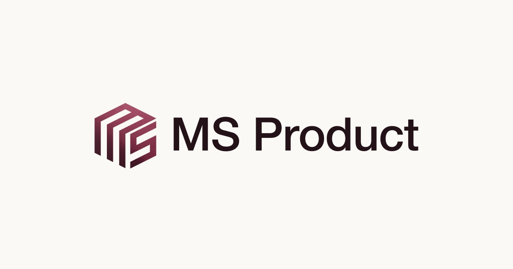
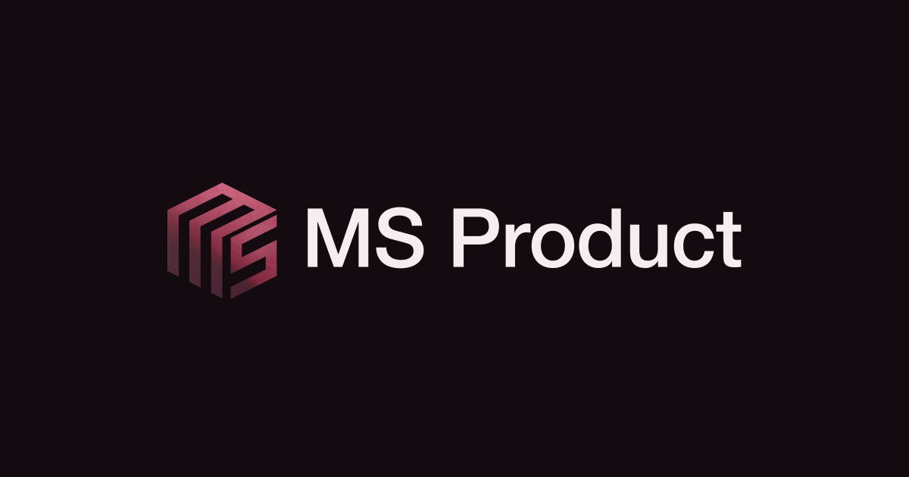
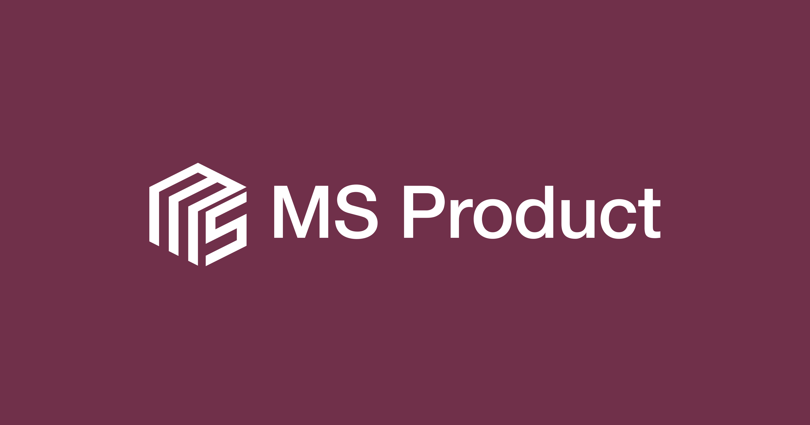
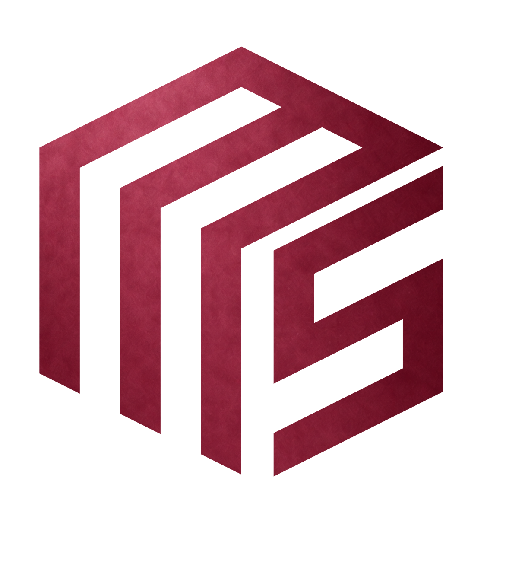
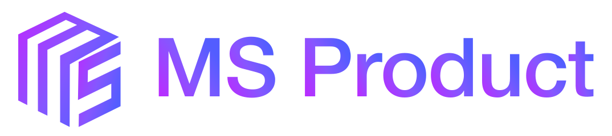

MS Product
Знак, название и фирменные фоны. Комплект для сайта.
 Основной · мягкая фактура
Основной · мягкая фактура
Светлая тема
Тёмная тема
Фиолетовый фон
Отдельный знак
Полностью цветнойКакие файлы использовать · Основной SVG · Favicon